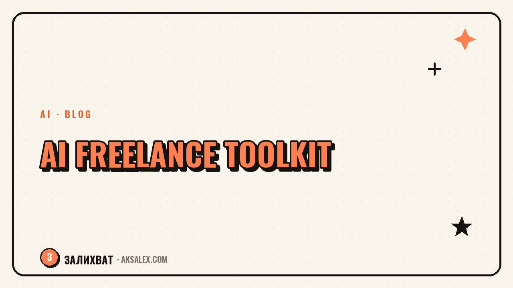

Neural Networks for Freelancing: Jobs, Quotes, and Client Communication

Finding jobs and writing pitches without boilerplate
Clients on freelance marketplaces read dozens of identical pitches a day: "Hello, I'm ready to complete your project with high quality and on time." Text like that doesn't set you apart from the rest. A neural network helps you quickly put together a pitch for a specific brief - paste in the project description and ask it to pinpoint the client's main pain point, then build the pitch around that rather than around generic phrases about yourself.
The second scenario is filtering jobs. If you monitor several marketplaces or job channels, a neural network can quickly run through a list of fresh postings and weed out the ones that don't fit on budget, timeline, or work format, leaving only the relevant ones for a manual pitch.
A working prompt for a pitch
"Here's a client's brief: [paste it]. Write a short freelancer pitch: 2-3 sentences where I show I understand the task and propose a concrete first step, with no generic phrases about 'high quality and on time.'"
How to calculate a quote and not undersell yourself
Many freelancers name a price off the top of their head - and then either work at a loss because they didn't account for revisions and calls, or lose the client by overshooting the figure on a hunch. A neural network doesn't know exact market rates, but it's good at helping structure the quote itself: breaking the project into stages, estimating the hours for each, and not forgetting to budget time for approvals and revisions.
Ask the neural network to break the brief into items and estimate the labor in hours next to each, based on your rate. From there you should adjust the total by hand from your own experience - but the structure of the quote, where it's clear what the price is made of, convinces the client far more than a single final figure.
- Break the project into stages instead of naming one lump sum
- Budget a separate line for revisions - usually 1-2 rounds are included in the price
- State separately what's not included in the quote to avoid an argument later
Client communication: from brief to project delivery
The hard part of freelancing isn't the work itself, it's the conversations around it: clarifying the brief, gently declining a free revision, reminding someone about payment. A neural network is handy as a draft for such messages, especially when the topic is awkward and you're tempted to write something sharp and then regret it.
A common piece of advice from experienced freelancers: don't send a message to a client right after you've gotten angry - draft it to the neural network, cool off for five minutes, and reread the calmer version.
Situations where a draft from a neural network saves your nerves
- The client asks for a free revision beyond the agreed scope
- You need to remind someone about an overdue payment
- The deadline is slipping through no fault of yours, and you need to explain it
- The client goes quiet for several days while the project stalls
Which neural networks suit a freelancer
For a freelancer's tasks - pitches, quotes, communication - you don't need a highly specialized service, a general-purpose text neural network is enough. The difference between them is in how comfortable they are with long documents and in price.
| Service | Free access | Handy for | Notable feature |
|---|---|---|---|
| ChatGPT | Yes, with limits | Pitches, communication | Holds the context of the whole conversation well |
| Claude | Yes, with limits | Parsing large briefs | Convenient for uploading whole documents |
| YandexGPT | Yes | Communication in Russian | Fewer paid restrictions for Russia |
| GigaChat | Yes | Basic quotes and letters | Simple free access |
What a neural network definitely won't replace
It's important not to confuse help with routine and the handing off of decisions. The final price, the agreements on timelines, and the assessment of a project's complexity are still up to you, based on your experience and workload - a neural network doesn't know your real schedule and bears no responsibility to the client.
The same goes for negotiations in conflict situations: a neural network will write a draft of the letter, but the tone and your willingness to make concessions are your call, looking at the specific person and your history with them. Use AI as an accelerator for the routine, not as a replacement for your own decisions.
Frequently Asked Questions
Can a neural network calculate the exact price of a project for a client on its own?
No, it doesn't know current market rates or your real workload. But it's good at helping break the project into stages and hours, and you adjust the final figure yourself, drawing on your experience.
Should I send a client a letter written by a neural network without edits?
Better not - the draft is worth rereading and tailoring to your usual style of communicating with that client. Otherwise the message sounds too smooth and impersonal, and that's noticeable.
Which neural network is best for a freelancer's quote?
For structuring a quote, any text neural network works - ChatGPT, Claude, YandexGPT, or GigaChat. What matters more than the choice of service is the habit of breaking the project into stages instead of naming one lump sum.
Does AI help find jobs, not just respond to them?
A neural network doesn't directly find jobs for you, but it helps quickly filter a list of fresh postings by budget and format if you're monitoring several marketplaces or channels by hand.
Won't the client notice a pitch was written with a neural network?
They will, if the pitch sounds boilerplate and lacks specifics about their task. If you use the neural network as a draft and flesh it out with details from the real brief, the text looks like a normal, genuine pitch.
Enjoyed this one? Here's what to read next. AI won't pass the interview for you, but it can prep you for it in an evening. Let's look at the steps that work.
Read the article →not by hand